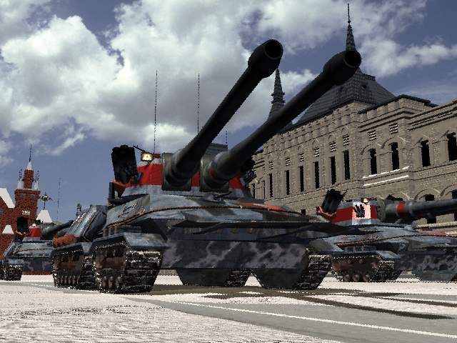
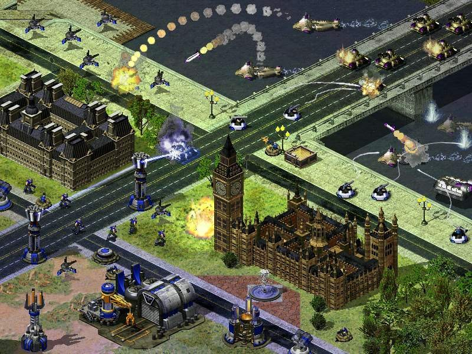
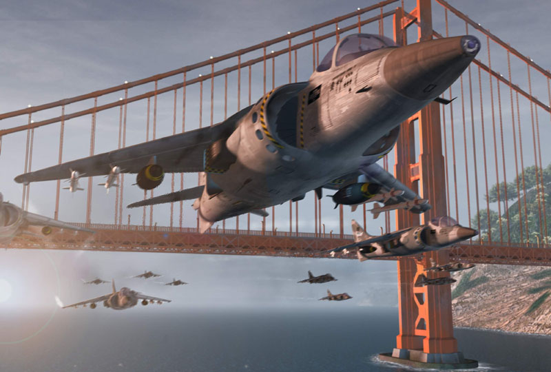
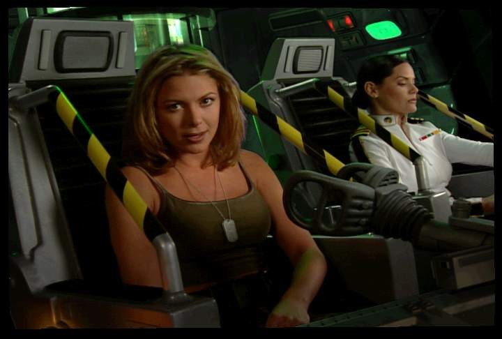
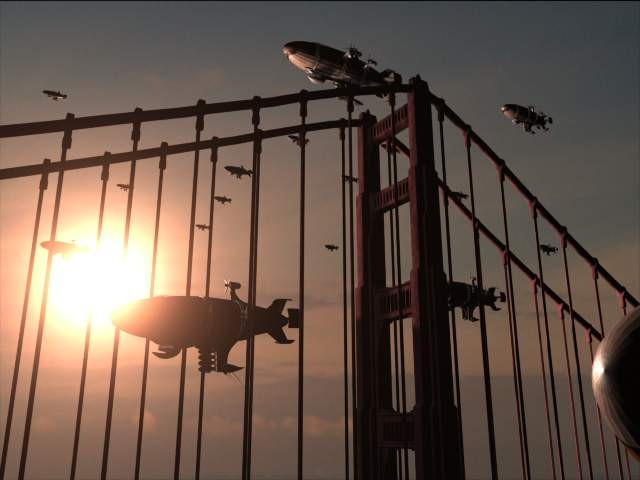

Алертовские Посиделки.
Или «Как поймать торпеду без особых последствий».
Фор Мазер Раша!
(Из мемуаров солдатика, прущего под «Мамонт»)

Раскрасневшееся солнце медленно опускалось за горизонт. В воздухе разносился терпкий запах солдатских портянок и самогона, смешивавшийся с выхлопами машин. Такое «биологическое оружие», которое можно было унюхать на приличном расстоянии от базы, было смертельно для всех вражеских солдат, поэтому атак пехоты можно было не бояться. Из бараков весело выбегали пехотинцы, подбадриваемые нехилыми пинками инструктора, знакомыми им до боли…в копчике. Огромные харвестеры возили руду в хранилища, выстраивались новые башни, техника отправлялась на фронт – в общем, форпост войск «Союза Нерушимого Республик Свободных» жил своей обычной жизнью. Шум гусениц танков, скромное пение ещё живых птиц и смачное матюгание ещё живых прапорщиков дополняло картину маслом.
Недалеко от всего этого великолепия расположились четверо солдат, двое из которых безуспешно пытались раздуть костёр. Наконец, им это удалось, и огонь весело запылал, пожирая старые портянки, которые пришлось использовать не по назначению в виду отсутствия бумаги. Трое солдат, примостившихся у костра, сильно отличались от остальных: вместо затёртых шинелей на них были камуфляжные костюмы и лёгкие бронежилеты. Четвёртый был явно здешний, он несколько злобно ухмылялся и спокойно подбрасывал связку динамита. Один из тех трёх странных солдат, явно командир, привстал и обратился к «здешнему».
- Мы тут, это, с патчем пришли. Нас в срочном порядке призвали сюда, дабы разнообразить боевые действия. Ты, это, извини, что не по уставу разговариваю, но обстановка не боевая какая-то…в общем, приятно познакомиться.
- Приятно, приятно. А я, вообще-то, из Блуда, - начал тот, однако его прервали.

- Блуд – это грех! – произнёс непонятно откуда взявшийся на поле боя священник.
- А тебя, Юрик, вообще никто не спрашивает! – огрызнулся тот, - Нарядишься в рясу и ходишь потом, индульгенции продаёшь, сволочь! Тоже мне, бизнес наладил. Да с таким как ты только пули разговаривают, ты смотри, найдёшь ещё себе американского собеседника! И вообще, Blood – это игра! – он перевёл дыхание, - Уф, меня Сюрпризом звать. Меня к вам экскурсоводом приставили.
- Это Бульдог, это Ноль, меня зовут Прикладом, - представил группу командир.
- Сейчас ещё Горячий придёт, - ухмыльнулся Сюрприз, - Он пошёл сивуху у парашютистов тырить.
- А это что за боец? – поинтересовался Приклад.
- Раньше его звали Саами Йолкаллопалкалло, финн то бишь. За америкосов служил, потом ему наш дядя Юра мозги промыл, а вскоре мы ему желудок водкой промыли и с тех пор он совсем как свой. Даже по-русски почти без акцента говорит, наша работа, - похвастался Сюрприз.
Через пару минут появился высоченный, но худой скандинав, который тащил за собой стеклянную бутыль литров на десять, полную мутной жидкости.
- Блин, Горячий, тебя только за смертью посылать, - вскричал Сюрприз, - Финнскайа сивухха саммая меддленная сивухха в миире, - передразнил он Горячего.
- А у вас клей для плитки плохой, - огрызнулся тот. Горячий обычно говорил по-русски без акцента, но, когда начинал волноваться, в его голосе слышались финские интонации и даже финские слова.

- Слышь, Горячий, познакомься с гостями, они к нам с патчем прибыли, - Сюрприз показал на трёх солдат, которые молча кивнули головами, - Может, расскажешь чего-нибудь интересненькое, для поддержания разговора.
- Харрашо, - начал скандинав и все незаметно улыбнулись, - Ккагда йа слюжил за аммерриканцев, йа виддел сольдатта, каторово звали Таней…
- Буланова что ли? – спросил Бульдог.
- Да нет! – Горячий явно успокоился и перестал говорить с акцентом, - Просто Таня. И ежу ясно, что баба с гранатой – всё равно что обезьяна за рулём, а если у этой бабы ещё и бесконечный запас С4, так это вообще Армагеддон какой-то. Так вот, у неё ещё и пистолеты, которые стреляют намного дальше и мощнее наших АК-47. Татьяна – единственная из всех пехотинцев обучавшаяся в легушатнике, однако, по оперативным данным, пробыла она там всего два месяца, поэтому и выучилась плавать только по-собачьи, - Горячий перевёл дух, остальные слушали с интересом.
- Так вот, она, падла плавающая, умеет корабли взрывать. Блин, я такое видел. Короче, огромный, трёхпалубный, бронированный крейсер с мощнейшими ракетами в страхе уплывает на максимальной скорости от мелкой, неприметной тётки, которая, несмотря на волны и акул, пытается догнать корабль, делающий, по крайней мере, двадцать узлов. И который мог бы эту бабу просто и банально разделить на две половинки своим корпусом, - солдаты заржали, и Горячий, довольный собой, с широченной улыбкой оглядел товарищей и под громкое гоготание продолжил.

- А как-то раз, когда операция в Балтийском море была, тоже история случилась. Эта самая Таня плывёт себе спокойно, пытается вражескую базу с тыла обойти. Тут всплывает подлодка и кааак даст по ней залп торпедой! – все присутствующие затаили дыхание, - А она только полздоровья потеряла. Вы прикиньте, капитан наверное охренел, когда увидел, что эта плавающая деваха, словив начинённую полным боевым зарядом торпеду, преспокойно продолжает плыть дальше, несмотря на нехилую дырку от снаряда. И вообще, меня удивляет, что здесь Евгения Онегина нет, было бы неплохо. Может, добавят с патчем каким-нибудь, - Горячий, наконец, умолк и победоносно оглядел своих товарищей.
Солдаты продолжали ржать, в воздухе вдруг подозрительно запахло сероводородом, у кого-то из пятерых, видимо, нервы не выдержали от смеха.
- Команда «газы» дана для всех, - ухмыльнулся Сюрприз и, набрав в рот сивухи, молниеносным движением вытащил зажигалку и поднес её ко рту. Через мгновение всем пришлось отвернуться, потому что Сюрприз выдул нехилый факел, яркость которому прибавило наличие этого самого сероводорода в воздухе.
- Блин, солдат, ты не прав, - высказал своё мнение Приклад (вообще-то он сказал несколько по-другому, редактор не простит мне этой фразы, хотя именно в ней была выражена вся русская душа, всё происходившее в данный момент на поле боя, вся ситуация во всех красках, а так же многочисленные пикантные подробности о матери Сюрприза).
- Ладно, ладно, не горячись ты, - начал Сюрприз успокаивать товарища, - Давайте я лучше ещё историю расскажу, - все затихли, продолжая, правда, протирать глаза.
- Короче, - продолжил Сюрприз, отхлебнув ещё из кружки, - Когда мы под Берлином стояли, тогда холодно было, меня один вопрос замучал. Из чего ж наши танки-то делаются, а? – он оглядел присутствующих торжествующим взглядом, все только пожали плечами, - Они, блин, как будто из этой чёртовой руды производятся. Или руду эту сначала в купюры переводят через Центробанк и потом уже технику склеивают? Никогда этих техников не понимал. А выглядят ведь танки как железные, здорово, видать, их склеивают, сволочи, - Сюрприз сделал акцент на последнем слове и слегка прищурился.
- Танки танками, а вот танкистов я вообще тут в глаза не видел, - размышлял в слух Ноль, глядя в небо, - А этот дирижабль тоже из баксов что ли?
- О, насчёт дирижаблей, - вскрикнул Бульдог, - Я тут такое видел, закачаетесь. Короче, тут у нас все самолёты на металлолом пионеры, сволочи, растаскали, и остались одни вот эти дирижабли. Так вот, летит эта махина, мееееедленно так, моя контуженная бабушка быстрее дорогу переходит, - Бульдог еле-еле переводил дыхание, рассказывая буквально с пеной у рта. – А тут пяток ракетчиков вражеских подбегают. Ну, думаю, кранты дирижаблю. Ещё чего! Выпустили они ракет десять, а тому хоть бы что, до сих пор недоумеваю, как он разлетелся ко всем чертям со всем боезапасом.
- М-да, попали мы чёрте знает куда, - вздохнул Приклад, - Как вы вообще здесь живёте, - эти слова адресовались Сюрпризу, - Чего ж вы тут жрёте? Я видел, как прапоры давеча травку жевали. Блин, вы бы хоть фермы построили что ли с какой-нибудь живностью, чтоб всё как у людей, а то ваще…А в Сибири вы, наверное, только лёд грызёте? – Сюрприз лишь пожал плечами и отвёл глаза в сторону, судорожно подбрасывая связку динамита.

- Я вот что ещё не понимаю, - задумчиво проговорил Ноль, - Я тут видел, как у вас здания продаются. Мало того, что покупатели всегда находятся, так ещё и в любом, даже поломанном состоянии прямо с руками отхватывают. Никакой тебе рекламы, вроде: «Покупая наши бараки, вы совершенно бесплатно получаете и этот раздолбанный радар», - Ноль сконфузился, - Прям в раю живёте. А почему вон тот инженер все время вокруг базы бегает и орёт: «Товарищи! Больше двух электростанций в одни руки не даём!»?
- Да чего вы спрашиваете?! – вспылил Сюрприз, - Мы тут сами много чего не знаем, Горячий докажет, - тот кивнул, сопровождая это действие дежурной улыбкой, - Сколько раз я уже чудеса видел. Ну, скажем, сижу я себе спокойно, никого не трогаю, вдруг в воздухе появляется огромный гаечный ключ и начинает здания наши чинить! Я охренел, когда увидел.
- Это, видимо, из серии детских страшилок, - улыбнулся Приклад, - «Чёрная рука, Белая простыня, Зелёные пальцы» - теперь ещё и Гигантский Гаечный Ключ. Уж не конопли ли вы нажрались?
- Да ккаккайа каннапля? – махнул рукой Горячий, - Тут деревья одинаковые все, а травы нормальной вообще нет…радиация что ли влияет…
- О, насчёт радиации, - перебил напарника Сюрприз, - Тут даже ракета не ядрёная…в смысле не ядерная! Было у нас задание в Москве. Надо было Кремль с мятежником Юриком захватить. Ну, в нашем понимании «захватить» означало «замочить», - Сюрприз опять криво ухмыльнулся и налил себе ещё сивухи, - Так вот, зарядили мы эту ракету и долбанули как следует и пошли обниматься – выполнили же миссию. Ну да, конечно, - ухмылка солдата перешла в оскал, - Так он выстоял, прикинь! Кремль снесло только со второго залпа! Блин, нормальные двадцать мегатонн долбанут так, что от половины карты ничего не останется, а тут мелочь какая-то гордо называет себя Nuclear Missle, тоже мне – мания величия.
Самогон потихоньку кончался, стало заметно скучнее, и Сюрприз решил показать патчевым гостям окрестности. Здания казались какими-то маленькими, солдатам, которые выходили из бараков, приходилось сгибаться в три погибели, чтобы пролезть в маленькую дверку. Вокруг базы вовсю носились овчарки-переростки, размером с неплохо откормленного пехотинца. Они гонялись за шпионом, который с голодухи сожрал все их кости. Невдалеке от базы примостилась роща танков «Мираж», которые действовали явно по схеме «я туча, туча, туча, а вовсе не медведь» ((с) Винни-Пух). Пара дирижаблей уже летела выкашивать этот импровизированный лесок, нагло наплевав на Гринпис.
Вдалеке слышался грохот взрывов – Советы брали штурмом вражескую базу. В бинокль было видно, как советские пехотинцы сражаются против американских танков.
- Смотри, смотри! – заорал вдруг Ноль, в руках у которого, собственно, и был бинокль, - Наш солдат словил два снаряда от танка и хоть бы что! Ползёт дальше, а на него ещё снаряды сыпятся! Что за бред такой?
- Почему сразу бред? – спокойно переспросил Сюрприз, - Обычное дело. Вы не знаете, какие шинели на наших оборонных заводах делают. Наши шинели самые шинелистые шинели в мире. Наши солдаты их даже в тропиках не снимают, очень уж любят. А мне вот не положено, - Сюрприз грустно провёл взглядом по своей тоненькой курточке, - А вот этот щеголяет, - он указал на гордого Горячего.
- Да советские солдаты ничего кроме «Да» по-русски произнести не могут, - вставил Горячий, - Да и то с акцентом.
- Эй, эй, эй, поосторожней! – Сюрприз злобно посмотрел на товарища, - Может быть, наши английскому учатся, а? Вот, например, «Фор мазер раша» они с таким задором произносят!
- Да ну, это что! Вот, помню, американские GI те ещё фокусники. У наших шинели, а их заморские кутюрье порадовали нас своими снарядоустойчивыми боевыми курточками. Причём пули их берут значительно лучше.
- Ну, ну…лучше берут, когда тут автоматы дальше чем на пять метров не стреляют, - сказал с обидой Приклад, - Солдатам приходится вплотную к противнику подходить. Уж не знаю, как себя солдаты чувствуют, когда в упор друг в друга стреляют.
- Дык ты не видел, как они окапываться умеют, - продолжил Горячий, - Глазом не успеешь моргнуть, а они уже мешками с песком обложились. Да к тому же, эти самые мешки прямо из воздуха появляются, потому что GI ходит налегке, а мешки, как минимум, килограмм сто весят. Видимо, не перевелись ещё в Америке
Кашпировские и Копперфильды, пусть летать и не умеют, зато мешки из воздуха делают преспокойно. Про пулемёт, оказывающийся в руках пехотинца в момент окапывания, я уже и не спрашиваю.
Солдаты слегка улыбнулись и покачали головами. Они долго ещё стояли и смотрели на зарева от взрывов, слушая привычную для солдатского уха канонаду.
- Ладно, товарищи, - сказал вдруг Сюрприз, - Нам пора, приказ поступил присоединиться к бою, а то, говорят, подкрепления нет, им подрывники нужны. Что ж, они их получат, пошли, Горячий, - он махнул рукой скандинаву, - А вы, это, подождите, может, и к нам присоединитесь потом, если позовут, - с этими словами Сюрприз сжал покрепче связки динамита и побежал вперёд, вслед за ним отправился в бой и Горячий.
- Да, ребят, странный этот мир какой-то, - глядя в пространство, сказал Приклад, - Нелогичный слишком, кривоватый, да и жрать тут нечего.
- По крайней мере, не лучше тех, в которых мы были, - заметил Бульдог, - Мультяшно всё, разноцветно, где камуфляж непонятно. Почти как японцы в этом…как его…«Сёгуне», которые в зелёном лесу с огромными оранжевыми флагами маскировались.
- Ну, зато прикольно, - парировал Ноль, - Я давно так не ржал, особенно Таня с торпедой порадовала.
- В любом случае, оставаться здесь навсегда невозможно, - отрезал Приклад, - Как только будет Перезагрузка, выметаемся отсюда, поищем что-нибудь получше. А то я задолбался уже путешествовать, остановиться где-нибудь хочется. Бульдог, куда перебираться будем
- Что ж, ладно, посмотрим, что у нас есть, - солдат вынул какой-то прибор, похожий на карманный компутер Palm и потыкал в него пальцем, - В данный момент возможны перемещения в WarCraft 2, Fallout 2 и Fifa 2000.
- Только футбола сейчас не хватало, - Приклад с горя сплюнул на желтоватую землю, - Хотя об остальных мирах я вообще понятия не имею. Разберёмся по ситуации, значит, как, впрочем, и всегда.
Солдаты ещё с минуту стояли молча, смотря в пространство и явно что-то серьёзно обдумывая. Наконец, где-то высоко в небе зависла надпись «You are victorious» и все пехотинцы радостно начали махать руками и что-то орать. «Пора», - подумал Приклад, и в глазах троих странных солдат потемнело…